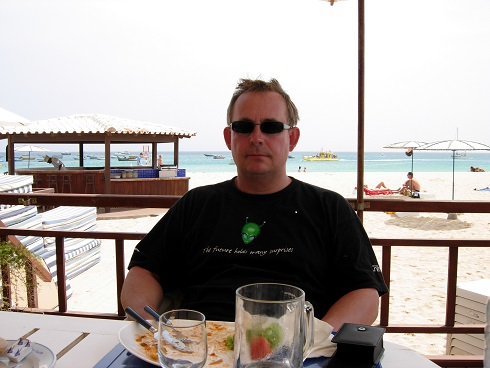

Intressen
- Golf
- Medlem Wäsby GK
- Hcp 9,8
- Spelar ca 30 rundor per år
- Tennis
- Spelar i Sollentuna TK
- Spelat sedan jag var 7 år
- Fruktad forehand
- Fäktning
- Tränar i SSIF
- Nybörjare
Familj
Min familj består av hustru, två söner och en hund
Utbildning
- Grundskola
- årskurs 1 Lagårdsskolan Saltsjö-Duvnäs, Nacka
- årskurs 2-6 Duvnäs Skola, Nacka
- årskurs 7-9 Skuru Skola, Nacka
- Gymnasium
- årskurs 1-3 Åsö Gymnasium, Stockholm
- Högskola
- Juridisk översiktskurs
- civ ing KTH Maskin
Arbetslivserfarenhet
- Enator Industriteknik 1984-1986, konsult programmering
- Infologics 1986-1989, konsult kunskapsbaserade system
- Autotank 1989-1993, systemutvecklare
- Front Capital Systems / Sungard Front Arena 1993 - , Systemutveckling
Programmeringserfarenhet
- Pascal 2 år
- Prolog 2 år
- C 10 år
- C++ 10 år
Varför webbprogrammerare?
Jag behöver uppdatera min kunskapsbas med lite ny teknik och det är en intressant teknik men tills nu ett svart "moln"
Framtiden
Hacka loss i www
